Технология взятия крови из вены
Технология взятия крови из вены для лабораторных исследований
Результаты исследования во многом зависят от техники взятия крови, используемых при этом инструментов, посуды, в которой хранится кровь.
При взятии крови игла должна быть с коротким срезом и достаточно больших размеров, чтобы не травмировать противоположную стенку вены и не вызвать повреждения эритроцитов с последующим гемолизом.
Кровь брать сухим охлажденным шприцем, спускать без иглы в сухую пробирку, не встряхивая.
Кровь для определения группы и резус-фактора
Из вены 5,0-6,0 мл в сухую пробирку без предварительной подготовки.
Кровь для определения СРБ, ревматоидный фактор, О-антистрептолизина
Из вены в сухую пробирку 5,0 мл - в одну пробирку (может быть три разных направления).
Кровь для определения титра антистрептокиназы
Натощак 6,0-7,0 мл крови в пробирку, содержащую 5%-ный раствор цитрата натрия (из расчета 0,1 мл на 1 мл крови).
Кровь для определения ЦИК
В пробирку забрать 4,0 мл венозной крови и в течение 1 ч после забора кровь доставить в иммунологическую лабораторию.
Кровь для определения иммуноглобулинов G, А и М
Натощак в сухую пробирку 5,0 мл венозной крови, кровь доставить в лабораторию в день забора.
Кровь для определения Т- и В-лимфоцитов
Натощак во флакон с консервантом (гепарином) забрать кровь из вены до метки на флаконе, в объеме 8-10 мл, аккуратно перемешать. Доставить в течение 1-2 ч. В направлении указать количество лейкоцитов и лимфоцитов из последнего клинического анализа крови.
Кровь на гемокультуру
Забор крови производится асептически на высоте подъема температуры на среду рапопорта (5 мл крови на 50 мл среды, обжигая края флакона над пламенем спиртовки (горелки)), содержимое флакона осторожно и тщательно перемешивается и доставляется в бактериологическую лабораторию, соблюдая стерильность.
Кровь на коагулограмму
Кровь берется в пробирки, взятые в лаборатории с консервантами накануне, до метки. При исследовании свертывающей и антисвертывающей систем крови следует выполнить следующий порядок забора крови:
1) кровь брать строго натощак
2) кожа на месте прокола обрабатывается спиртом (не эфиром!), прокол производят после высыхания спирта. Желательно кровь брать без наложения жгута, так как перетяжка конечности активирует свертывание крови, тромбоцитарный гемостаз и особенно фибринолиз. Кровь в пробирки набирают свободным током, перемешивая ее с антикоагуляцитом покачиванием (без вспенивания). Первые 5-6 капель крови выпускать на тампон и для исследования не брать, так как в них может быть заметная примесь тканевого тромбопластина
3) при назначении нескольких исследований сначала берется кровь на коагулограмму, протромбиновый индекс, фибриноген.
Кровь на RW
Берется в сухую пробирку 3-5 мл. В направлении указать: ЛПУ, ФИО пациента, дату забора крови, диагноз.
Кровь на СПИД
Берется в сухую центрифужную пробирку 4-5 мл венозной крови, пробирку закрыть резиновой пробкой и установить в контейнер с уплотнителем (вата, поролон). Кровь центрифугируется в течение 10 мин. Категорически запрещается забор крови в пробирку с отбитыми краями. По окончании центрифугирования переливается сыворотка в специальный контейнер. Работать с исследуемым материалом только в резиновых перчатках. Кровь может храниться в холодильнике не более суток. В направлении указывается диагноз, регистрационный номер, ФИО полностью, пол, возраст, домашний адрес, дата забора крови, дата доставки материала, фамилия лица, забравшего материал.
Взятие крови осуществляется натощак, в утренние часы; в случае необходимости – в любое время суток.
Взятие крови необходимо проводить в одноразовых резиновых перчатках; в тех случаях, когда это невозможно, перед каждым взятием перчатки следует обрабатывать 70%-ным спиртом.
При взятии венозной крови вены пережимаются манжетой на время не более 30 секунд (если пережатие не коснулось артерий – прощупывается пульс). Место пережатия должно быть выше места прокола на 8-10 см.
У больных с цианозом следует использовать иглы большего диаметра (вязкость крови выше). При внутривенных переливаниях крови или лекарственных веществ взятие крови осуществляется как можно дальше от места переливания.
Осуществляют его с помощью венепункции. Прокол вены производят иглой Дюфо, имеющей сечение 1,5 мм. Часть канюли иглы имеет квадратное сечение и нарезку, чтобы удобнее держать пальцами, а другая – оливообразную форму, на нее при кровопускании надевают эластичную трубку.
Кроме того, для взятия крови из вены потребуются: стерильные ватные шарики, смоченные спиртом; жгут; пробирка.
Последовательность действий:
-Наложить жгут на среднюю треть плеча.
-Обработать область локтевого сгиба последовательно двумя ватными шариками, смоченными спиртом. Больной в это время сжимает и разжимает кулак.
-Найти наиболее наполненную вену, натянуть кожу локтевого сгиба левой рукой и зафиксировать вену. Больной в этот момент должен сжать кулак.
-Держа иглу срезом вверх параллельно коже, проколоть кожу, осторожно ввести иглу на 1/3 длины так, чтобы она была параллельна вене.
-Под иглу, чтобы не испачкать руку больного кровью, подложить стерильную салфетку.
-Подставить к канюле иглы пробирку. Выпустить нужное количество крови.
-Снять жгут, больной должен разжать кулак.
-Извлечь иглу, прикрыть место пункции ватой, смоченной спиртом.
-Попросить больного согнуть руку в локтевом суставе.
-Прикрепить направление к пробирке.
-Пункцию вены для взятия крови на исследование производят только иглой без шприца.
-Жгут снимают по окончании процедуры, перед извлечением иглы.
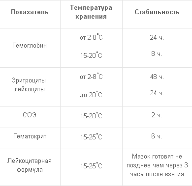
Системы для забора венозной крови
Вакуумная система «ВАКУЭТ» обеспечивает максимальное удобство при взятии крови из вены пациента, соответствует нормативным требованиям ведения преаналитического этапа лабораторных исследований и имеет следующие преимущества:
-значительное уменьшение болевых ощущений при венопункции;
-сокращение времени проведения процедуры до 5-10 сек;
-возможность забора крови в несколько пробирок для различных анализов без повторного введения иглы в вену;
-возможность забора крови у пациентов с труднодоступными венами;
-повышение безопасности медперсонала и пациентов;
-стандартизация условий забора венозной крови;
-простота и надежность маркировки и транспортировки образцов;
-повышение качества образцов сыворотки или плазмы крови;
-уменьшение ошибок на преаналитическом этапе лабораторных исследований.
В настоящее время используется несколько вариантов комплектации системы, в зависимости от состояния вен пациента, вида лабораторных исследования и личного опыта медперсонала.
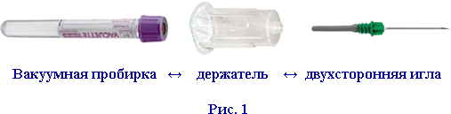
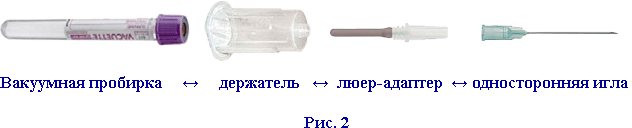
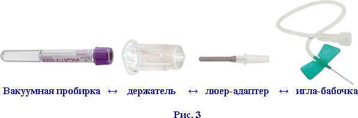
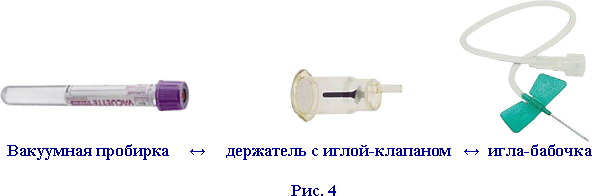
Пробирки
Вакуумные пробирки «ВАКУЭТ» изготовлены из полимерного материала полиэтилентерфталата (ПЭФ). Изделия из этого пластика отличаются легкостью, прочностью и прозрачностью. Пробирки закрыты безопасными крышками, состоящими из трех частей: резиновой пробки, пластикового корпуса и идентификационного кольца.
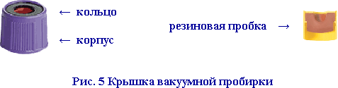
Корпус крышки защищает от прикосновений с внутренней поверхностью резиновой пробки, на которой могут быть капли крови после открытия пробирки. В зависимости от назначения пробирки корпус крышки окрашен в различные цвета в соответствии с стандартом ISO 6710. Цвет кольца обозначает наличие разделительных компонентов (желтый - гель, красный - гранулы) или назначения пробирок (белый - для детей, черный - для взрослых).
При выборе пробирок следует учитывать их объем, размеры и необходимый объем забора крови.
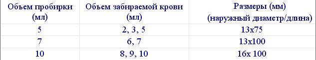
Наружный диаметр и длина пробирок должны соответствовать размерам ячеек штативов, роторов центрифуг и штативов автоматических анализаторов, используемых в лаборатории.
Пробирки для получения сыворотки крови
(иммунохимия, биохимия, бактериология, определение групп крови)
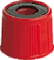
а. С активатором свертывания - красная крышка и черное кольцо (педиатрические - белое кольцо). Внутренние стенки пробирки покрыты сухим активатором свертывания (SiO - оксид кремния) для ускорения образования сгустка крови. Время свертывания 20-30 мин. Образцы крови от некоторых групп пациентов могут требовать для формирования сгустка более чем 30 минут (лечение антикоагулянтами, болезни печени, нарушения гемостаза, миелома и др).
б. С активатором свертывания и разделительным олефиновым гелем - красная крышка и желтое кольцо. При центрифугировании гель формирует разделительный слой между сывороткой крови и сгустком.
в. С активатором свертывания и разделительными гранулами - красная крышка и красное кольцо. Гранулы из полистирола образуют разделительное кольцо между сывороткой и сгустком крови при центрифугировании.
Условия центрифугирования:
-только после полного формирования сгустка;
-без разделительных компонентов - 1500 g, 10 мин;
-с гелем или разделительными гранулами - 1800 g, 10 мин на горизонтальном роторе.
Пробирки для получения плазмы крови с ЭДТА
(гематология, иммунохимия, генодиагностика)
На внутренней стенке пробирки нанесена сухая ЭДТА-К2 или микрокапли раствора ЭДТА-К3 в концентрации 1,2-2,0 мг сухого реагента на 1 мл крови. ЭДТА предотвращает свертывание крови путем блокирования ионов кальция. Пробирки могут использоваться в автоматических геманализаторах без открывания крышки.
б. С ЭДТА-К2 и олефиновым гелем - фиолетовая крышка и желтое кольцо. Гель разделяет форменные элементы и сыворотку крови при центрифугировании. Пробирки используются для получения сыворотки при иммунохимическом определении термочувствительных аналитов (АКТГ, инсулин, С-пептид, паратгормон, гомоцистеин и др.)
Условия центрифугирования:
-для термочувствительных аналитов - немедленно после взятия крови в рефрижераторной центрифуге при 4є С
-без геля - 2000 g, 15 мин.
-с гелем - 2200 g, 15 мин
Пробирки для получения плазмы крови с гепарином
(биохимия, иммунохимия)
С цитратом натрия - голубая крышка, черное кольцо. Пластмассовые пробирки содержат буферный раствор цитрата натрия (3,2% или 3,8%) , используемого в качестве антикоагулянта для исследования коагуляции. Цитрат натрия, связывая ионы кальция, препятствует свертыванию крови. В графе «объем крови» прайс-листа приведены два значения Х/Y, где Х - суммарный объем крови и жидкого реагента, содержащего цитрат натрия, а Y - объем крови, который определяется уровнем вакуума.
Соотношение объемов крови и реагентов во всех пробирках равно (9:1)
Для увеличения стабильности буферных растворов цитрата натрия используют двойные пробирки: внутренняя - из полипропилена, внешняя - из полиэтилентерфталата.
Условия центрифугирования:
-при комнатной температуре (18 … 25 єС);
-получение плазмы обогащенной тромбоцитами (PRP) - 150 g, 5мин;
-получение плазмы бедной тромбоцитами (PPP) - 1500-2000 g, 10 мин:
-получение плазмы свободной от тромбоцитов (PFP) - 2500-3000 g, 25 мин
Пробирки для получения плазмы крови для определения глюкозы
Пробирки с антикоагулянтом и стабилизатором глюкозы - серая крышка, черное кольцо. В качестве антикоагулянта используют ЭДТА К3, оксалат К или Li-гепарин. Ингибиторы гликолиза - флюорид натрия или монойодацетат стабилизируют уровень глюкозы в крови на период до 24 часов.
Пробирки для получения плазмы крови для определения СОЭ
Пробирки с 3,8% цитратом натрия - черная крышка и черная кольцо. Соотношение крови и реагента 4/1. Определение СОЭ по методу Вестергрена. Дополнительно необходимы специальные штативы с градуировкой (Кат. номер 836075)
Иглы
В повседневной практике клинической лаборатории правильный выбор вида и размера игл является одним из важнейших условий успешной венопункции. Он определяется назначенными исследованиями, размером, доступностью и состоянием вен пациента. Чаще всего используются системы с двухсторонними иглами. Одна часть иглы предназначена для введения в вену пациента, другая с клапаном - для прокалывания резиновой пробки пробирки.
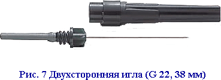
За счет резинового клапана сохраняется герметичность системы во время смены пробирок, что дает возможность отбора нескольких проб при однократной венопункции. Иглы имеют различные длину (25 или 38 мм) и диаметр. Калибр иглы («G» от слова gauge ) - число, определяющее диаметр просвета иглы. Принято, что значение G и диаметр просвета имеют обратно пропорциональную зависимость. Большее число G соответствует меньшему внутреннему диаметру иглы .
Калибр (G) , внутренний диаметр (мм) и цветовая кодировка игл.
G мм Типы игл, цветовая кодировка
Обычное использование
20 0,9 Подкожные двухсторонние (желтые) Иногда при заборе большого объема крови из крупных нормальных вен
21 0,8 Подкожные двухсторонние (зеленые) Обычная венопункции у пациентов с нормальными венами; для культуры крови
22 0,7 Подкожные, двухсторонние (черные) У взрослых и детей с тонкими венами
Для обеспечения легкого и менее болезненного прокалывания кожи и стенки вены с минимальным повреждением тканей, иглы для забора венозной крови имеют очень тонкую стенку, кончик иглы затачивается под небольшим углом, поверхность полируется и покрывается силиконом.
При использовании обычных игл с люеровским соединением или игл-бабочек со стандартным держателем применяется люер-адаптер, одна половина которого имеет иглу с клапаном, а другая - является насадкой под люеровский коннектор.
Иглы-бабочки имеют выступы в виде крыльеви более удобны для пункции труднодоступных и тонких вен. Они отличаются по калибру иглы (21-25 G) и по длине микротрубочки (10, 19, 30 см). Игла-бабочка «Safety» снабжена специальным устройством втягивания иглы (Рис. 8б, 8в) в корпус, что значительно уменьшает риск укола иглой после забора крови.
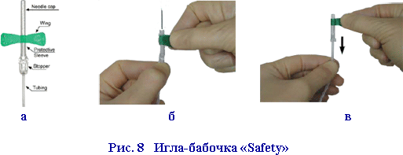
Все иглы поставляются в стерильной упаковке и предназначены для однократного использования. Двухсторонние иглы обычно упаковываются в пластмассовый футляр удлиненной формы. На месте соединения двух половин футляра наклеивается круговая этикетка с перфорациями, обеспечивающая легкое открывание упаковки.
Перед венопункцией необходим обязательный визуальный контроль целостности упаковки иглы. Если упаковка открыта или повреждена игла не может считаться стерильной и не должна использоваться.
Держатели
Выпускаются три типа многоразовых держателей «ВАКУЭТ»: стандартные (Рис. 1, 2, 3), удлиненные и с автоматическим сбросом иглы «Speedy» (Рис. 9). Удлиненные держатели более удобны при работе с пробирками объемом 10 мл.
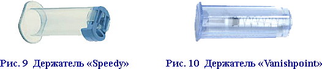
Держатель «Speedy» позволяет сбрасывать иглы после использования нажатием кнопки, что избавляет пользователя от необходимости скручивания иглы и снижает риск укола иглой. Одноразовый держатель «Holdex» (Рис. 4) более удобен при взятии крови из тонких и труднодоступных вен у детей и взрослых. Коннектор для стандартной иглы или иглы-бабочки расположен эксцентрично, что позволяет вводить иглу в вену под меньшим углом. Соединительный канал в стенке держателя наполняется кровью сразу же после удачной венопункции, что позволяет визуально контролировать процедуру забора крови. Одноразовый держатель «Vanishpoint» максимально снижает риск иглотравматизма и возможность заражения гемоконтактными инфекциями. После забора крови закрывается крышка держателя, а игла автоматически убирается внутрь корпуса (Рис. 9) с помощью пружинного механизма.
Аксессуары
Для удобства и безопасности работы с системами забора венозной крови предлагаются различные дополнительные принадлежности.
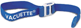
Многоразовый жгут «Vacuette» с автоматическим зажимом.
Удобен в работе, позволяет одной рукой усилить или ослабить сжатие вен конечности пациента при венопункции. Подлежит дезинфекции растворами, предназначенными для обработки резиновых и пластивых медицинских изделий.
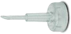
Насадка для мазков «VacuDrop».
Позволяет наносить каплю крови на предметные стекла без открывания крышки пробирки. Насадка состоит из защитного колпачка и пластиковой иглы для прокалывания резиновой пробки пробирки. На другой стороне колпачка игла переходит в трубочку со скошенным концом.
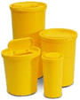
Контейнеры для сбора использованных игл.
Пластмассовые емкости с крышкой объемом 1.7, 2.1 и 3.2 литра. Контейнеры имеют специальные упоры для скручивания игл с держателя одной рукой без риска ранения. Емкости заливают дезинфицирующим раствором после наполнения их иглами для предутилизационной обработки.

Источник: medlabs.ru
(c) Регент
[Наверх]